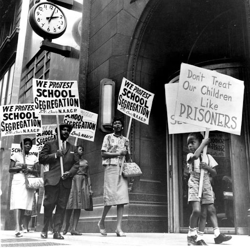

Happy Wednesday! Thank you for supporting the Daily Bulletin project.
- Suggest improvements to the Daily Bulletin project.
- Unsubscribe if you no longer wish to receive emails from the Daily Bulletin project.
Wellbeing Inspirations
Want to contribute to a future Daily Bulletin? Share your inspirations to give everyone some morning wellbeing energy!
Photo of the Day - Black History Month Special
Demonstrators picket in a school board in protest of segregation (St Louis, Missouri, Early 1960s)

Shared by Lina
Delicious Dinings
| Day | Meal | Options |
|---|---|---|
| Wed | Breakfast | Hot Breakfast |
| Lunch | Panner & Tomato Curry 🌱 | |
| Onion Raita 🌱 | ||
| Dinner | Tuna Casserole Bake | |
| Mushroom & Potato Gnocchi 🌱 | ||
| Thu | Breakfast | Continental Counter |
| Lunch | Beef Bolognese | |
| Creamy Mushroom & Edamame Pasta 🌱 | ||
| Dinner | Vegetarian Nasi Goreng 🌱 |
The catering team would like to remind everyone to wash their hands before coming to the dining hall, and to refrain from eating in the servery area. Thank you!
Retrieved from Shared Weekly Menu. For reference only; accuracy not guaranteed.
Important Events
| Day | Time | Event | Location |
|---|
Retrieved from What's On This Week.
Today in History
- 1513 – War of the League of Cambrai: A Venetian army under Bartolomeo d'Alviano was decisively defeated by the Spanish army commanded by Ramón de Cardona and Fernando d'Ávalos.
- 1780 – American Revolutionary War: Patriots and Loyalist militias engaged each other at the Battle of Kings Mountain in South Carolina.
- 1914 – In a death that Rudolf Steiner terms a voluntary sacrifice and that inspires Edith Maryon's relief In Memory of Theo Faiss , seven-year-old Theo Faiss was crushed by an overturned horse wagon.
- 1985 – During severe floods in Puerto Rico, about 130 people died as a result of the deadliest single landslide on record in North America.
- 2023 – The military wing of the Palestinian nationalist Islamist political organization Hamas massacred people attending an open-air music festival in southern Israel.
Retrieved from Wikipedia.